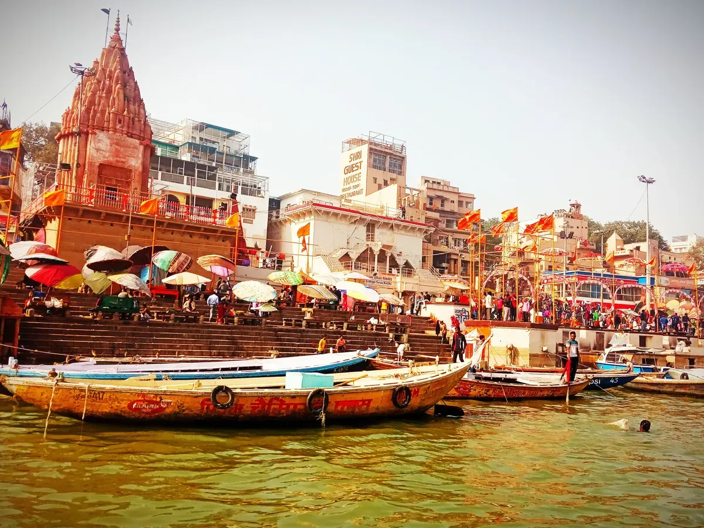
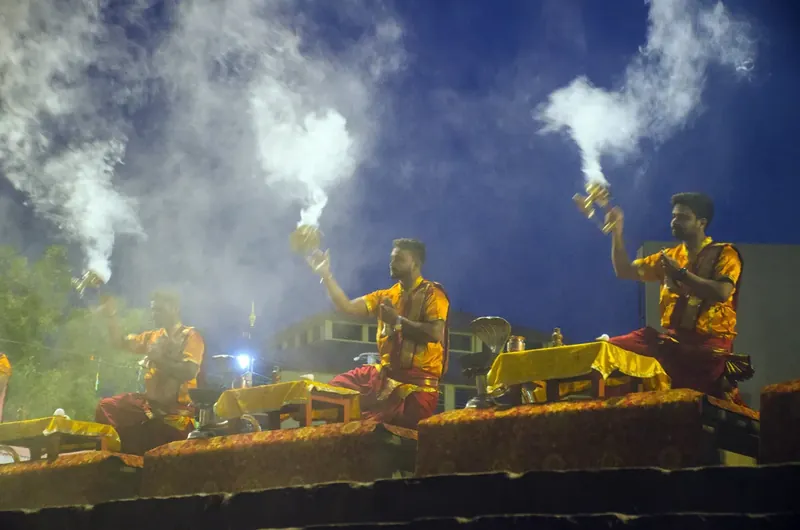
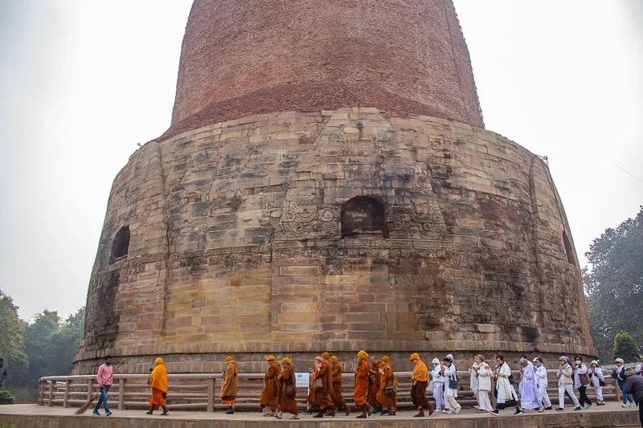
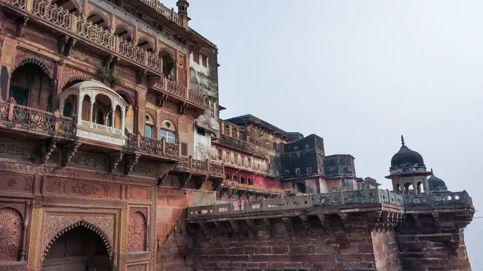
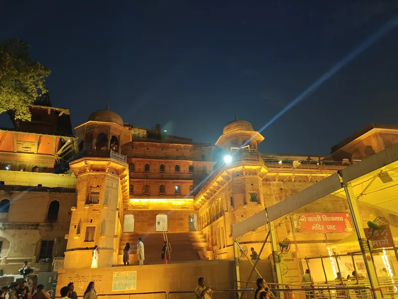

Kashi Vishwanath Temple
One of the most revered Shiva temples, in the heart of the old city.
Plan a visitTemples, ghats, food and festivals — and how to fit them into your trip.
Enquire on WhatsAppPlaces most visitors put on their Varanasi list. We can arrange a cab and a guide-led plan.
One of the most revered Shiva temples, in the heart of the old city.
Plan a visit




Varanasi is a city to eat in. Ask us for places our team likes.